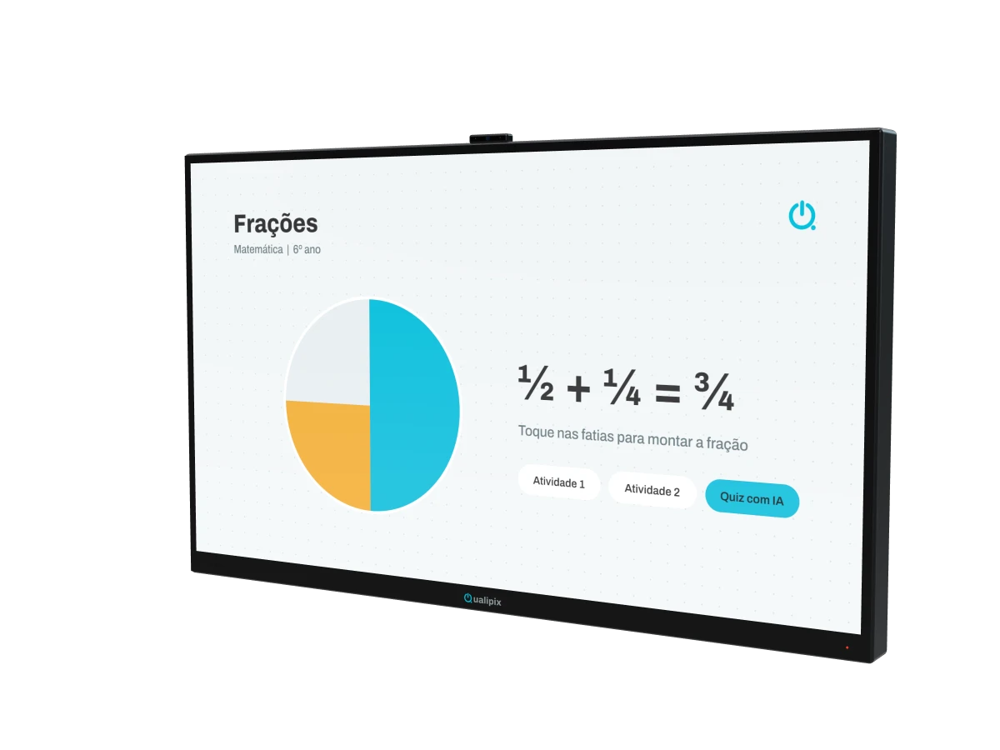
Lousa Digital
Tela 4K com touch nativo, tudo em um.
- Linha SX
- 32", 43" e 55". Usa o seu computador.
- Linha DX
- 65", 75", 86" e 98". Android 14, 8 GB de RAM, câmera e microfone.
- Toque
- 20 pontos, precisão de 2 mm
Lousas digitais 4K de 32" a 98", molduras touch e quadros híbridos fabricados pela Qualipix desde 2012. Esta tela funciona de verdade: experimente escrever nela.
Lousa Digital DX 86", com Android 14, câmera e microfone integrados
Role a página para abrir uma Lousa Digital Qualipix, da frente para trás.
É o que você toca. O tratamento antirreflexo mantém a imagem nítida perto de janelas e com a luz da sala acesa.
Uma grade invisível de feixes cruza o vidro e detecta dedos, ponteiras e a caneta magnética.
3.840 × 2.160 pixels, até 2× o brilho de uma TV comum e ângulo de visão de 178°: o fundo da sala vê o mesmo que a primeira fila.
Na linha DX, navegue, abra documentos Office e use apps da Play Store sem computador. Câmera e microfone integrados para videochamadas.
Estrutura em metal com suporte de parede na caixa. Entradas HDMI e USB para ligar o seu computador quando quiser.
Do display tudo em um à moldura que deixa touch a TV que você já tem.

Tela 4K com touch nativo, tudo em um.
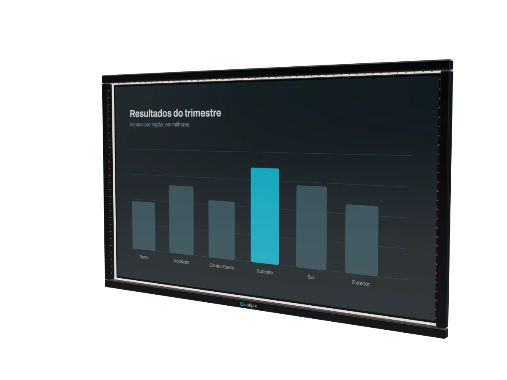
Transforma a sua TV comum em tela touch.
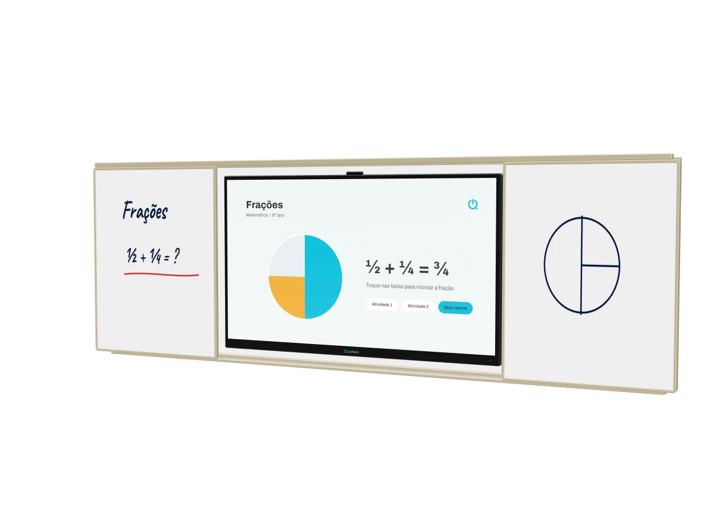
Quadro branco cerâmico e lousa digital no mesmo conjunto.
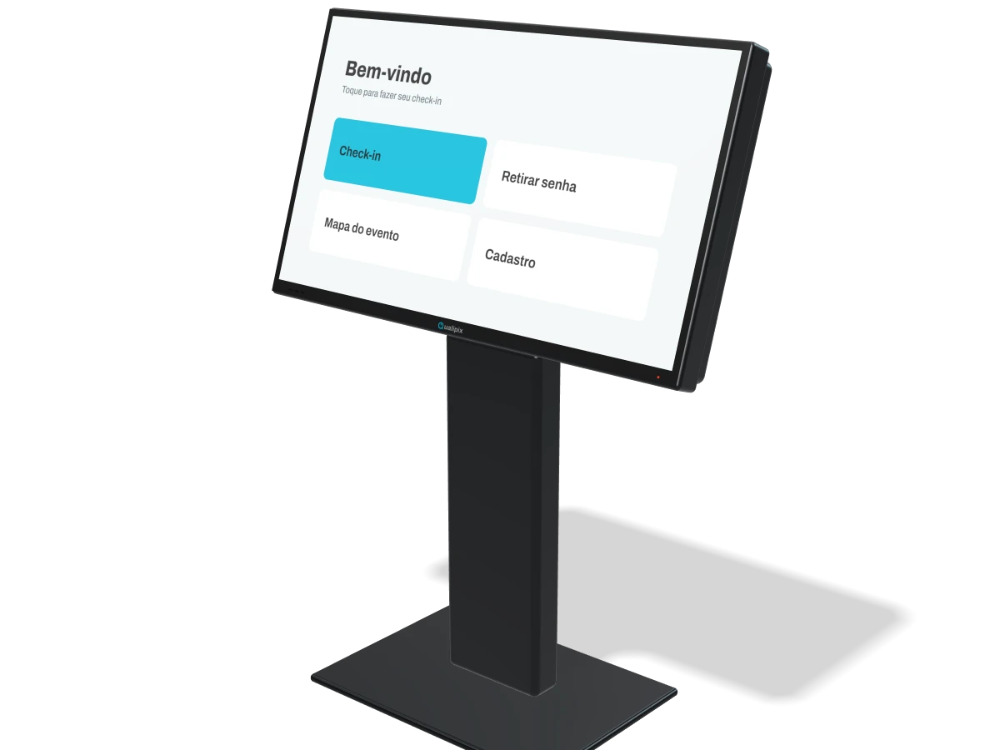
Autoatendimento, cadastro e mídia em pé.
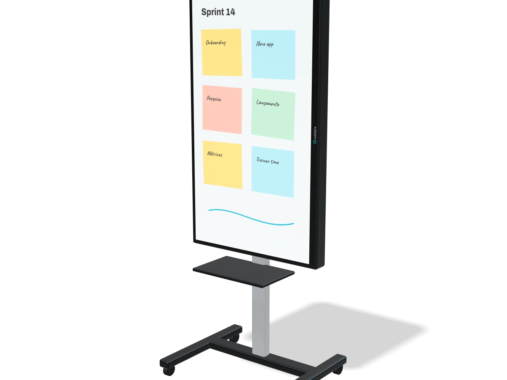
Para reuniões rápidas: leva, liga e usa.
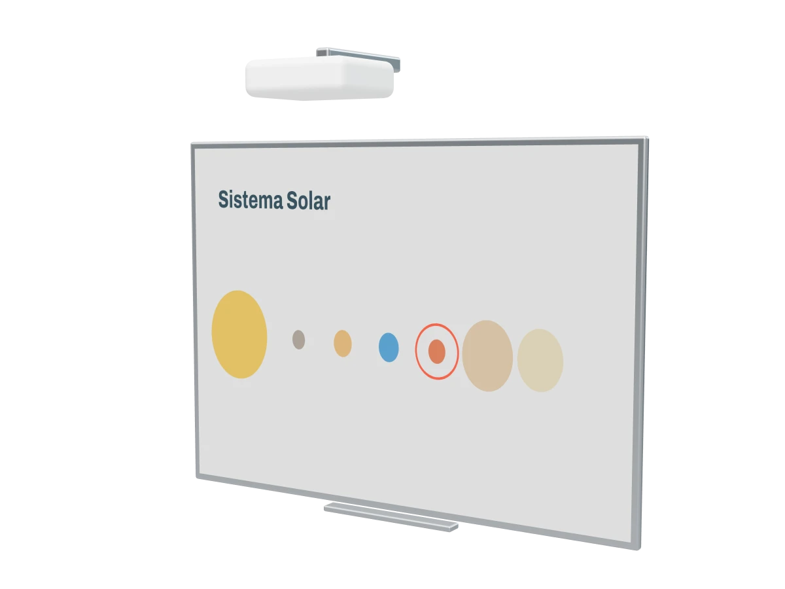
Deixa touch a imagem do seu projetor.
Funciona em TVs de 32" a 85". Recomendamos LG e Samsung; para outras marcas, conferimos as medidas antes.
Vidro de 4 mm e sensores infravermelho, fixados com o kit que vem na caixa.
Sem driver: conecte ao computador e a tela passa a reconhecer 20 toques ao mesmo tempo.
Superfície em aço cerâmico, resistente a riscos e manchas, com 3 anos de garantia.
Os quadros correm no trilho e revelam o display de 65", 75" ou 86".
A plataforma QualipixClass traz mais de 6.000 materiais prontos e IA que sugere atividades e monta slides.
Compare os sete tamanhos da Lousa Digital com uma pessoa de 1,70 m e uma porta padrão.
86"
Linha DX
Medidas aproximadas. A distância segue a referência de mercado de 6× a altura da imagem.
Responda três perguntas e indicamos o equipamento. Depois, um especialista confirma com você em 10 minutos.
Lousas digitais, quadro híbrido e plataforma educacional para salas de aula, laboratórios, bibliotecas, auditórios e salas de formação. A interação é feita com os dedos ou com a caneta magnética de ponta fina.
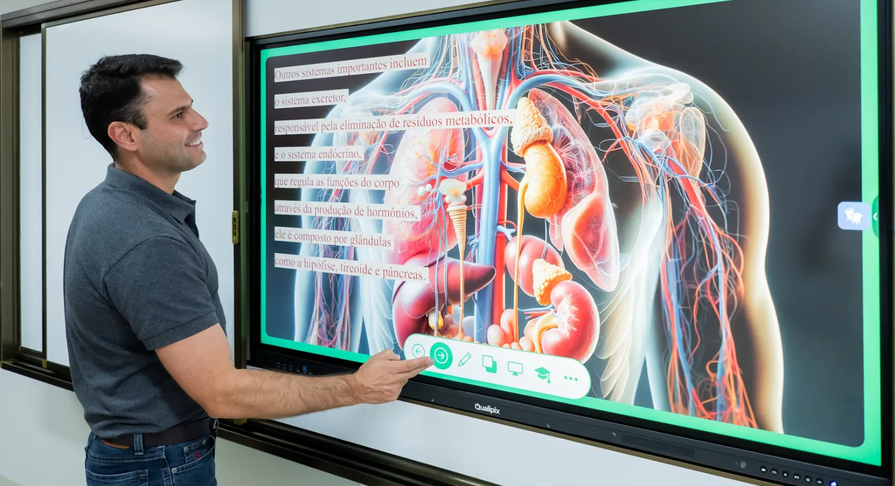
Para salas de reunião, treinamentos, feiras de negócios, lojas, recepções e áreas de espera. Design high tech com robustez para ambientes com grande fluxo de pessoas.
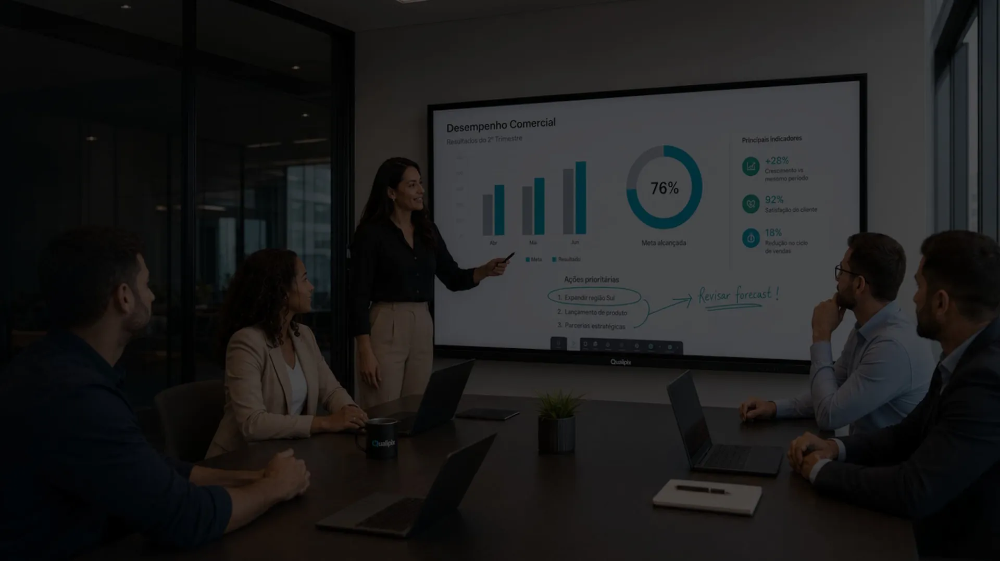
O Quadro Híbrido foi desenvolvido para o uso intenso das escolas públicas: superfície em aço cerâmico com 3 anos de garantia, lousa digital integrada e plataforma pedagógica com mais de 6.000 materiais e ferramentas de IA. Instalação e treinamento inclusos.
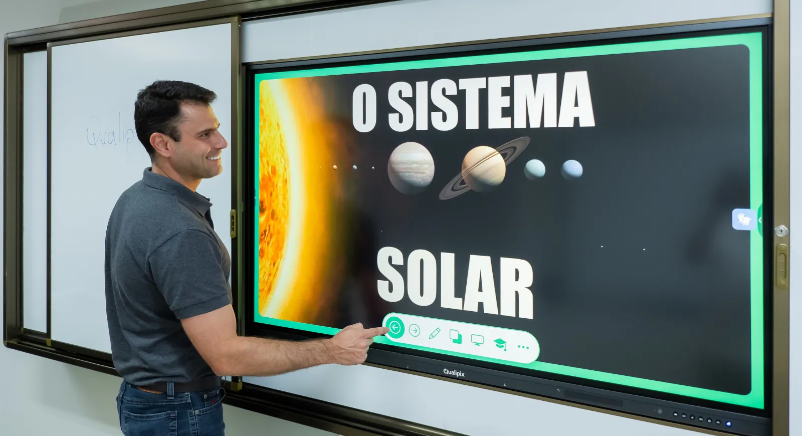
Apresente radiografias, tomografias, exames e planejamentos em uma tela 4K touch, com riqueza de detalhes. A conversa entre profissional e paciente fica mais clara e mais confiante.
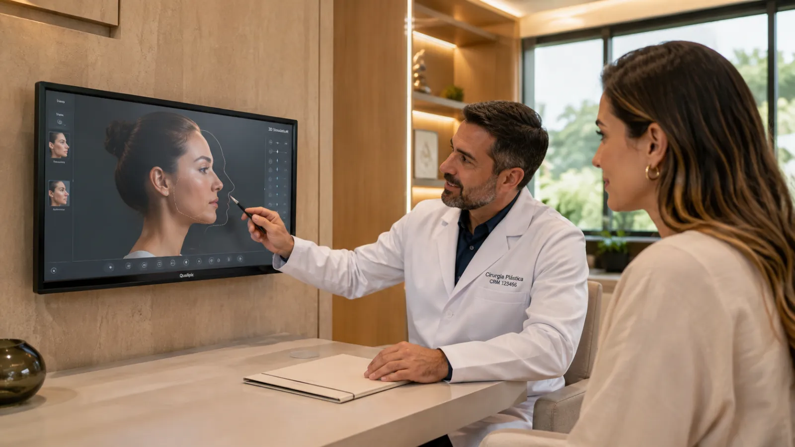
Totens e lousas digitais para feiras e exposições: apresente produtos, faça cadastros e capte contatos no ponto de encontro com o público.
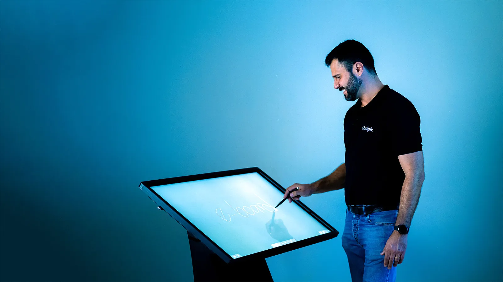
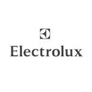
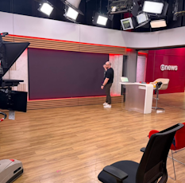
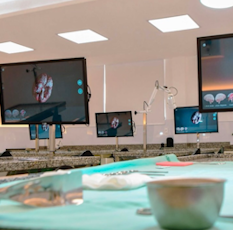
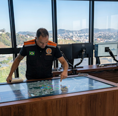
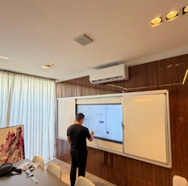
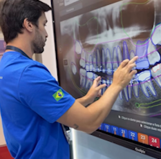
A Qualipix fabrica lousas digitais, molduras interativas, quadros híbridos, totens e lousas brancas interativas de 32" a 98". A equipe está no mercado desde 1999 e atende todo o Brasil a partir de duas unidades.
Atendimento por WhatsApp e chamada de vídeo, com gente que conhece o equipamento.
3 meses de garantia legal e mais 21 meses concedidos pela Qualipix.
Em poucos dias o equipamento está pronto para usar na sua sala.
Veja os produtos funcionando antes de decidir, na Alameda Santos.
Alameda Santos, 1773, conj. 1003
Cerqueira César, São Paulo/SP
CEP 01419-100
(11) 2690-4299, telefone
(11) 97175-6835, WhatsApp
Rua das Canoas, 970
Betânia, Belo Horizonte/MG
CEP 30570-068
(31) 3568-6835, telefone
Abrir no mapaLousas digitais de 32" a 98", molduras touch de 32" a 85" e Quadro Híbrido em 4,00 × 1,30 m ou 3,20 × 1,30 m. O Flip Chart Digital tem 43" e 55", e o Totem 32", 43" e 55".
No momento a Qualipix trabalha somente com venda de equipamentos.
2 anos: 3 meses de garantia legal e mais 21 meses concedidos pela Qualipix. No Quadro Híbrido, a superfície de escrita tem 3 anos de garantia.
4K, 3.840 × 2.160 pixels. A exceção é o Totem de 32", que é Full HD.
Sim. As lousas são compatíveis com Windows, macOS, Linux e Chrome OS. A linha SX funciona sempre com um computador; a linha DX também tem Android 14 embarcado.
Sim, na linha DX, desde que o aplicativo seja compatível com displays 4K.
Suporte de parede, cabo USB, controle remoto, 2 ponteiras e cabo de energia.
Poucos dias. Entregamos em todo o Brasil; o Quadro Híbrido é entregue nas regiões Sul e Sudeste.
Conte o que você precisa. A mensagem abre no WhatsApp da Qualipix já preenchida, e um especialista responde em horário comercial.
Prefere e-mail? contato@qualipix.com.br